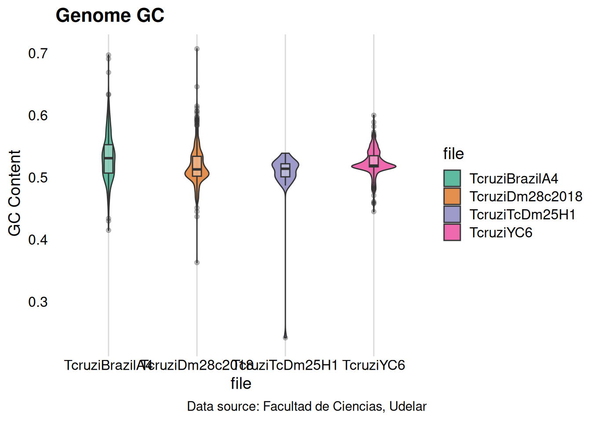
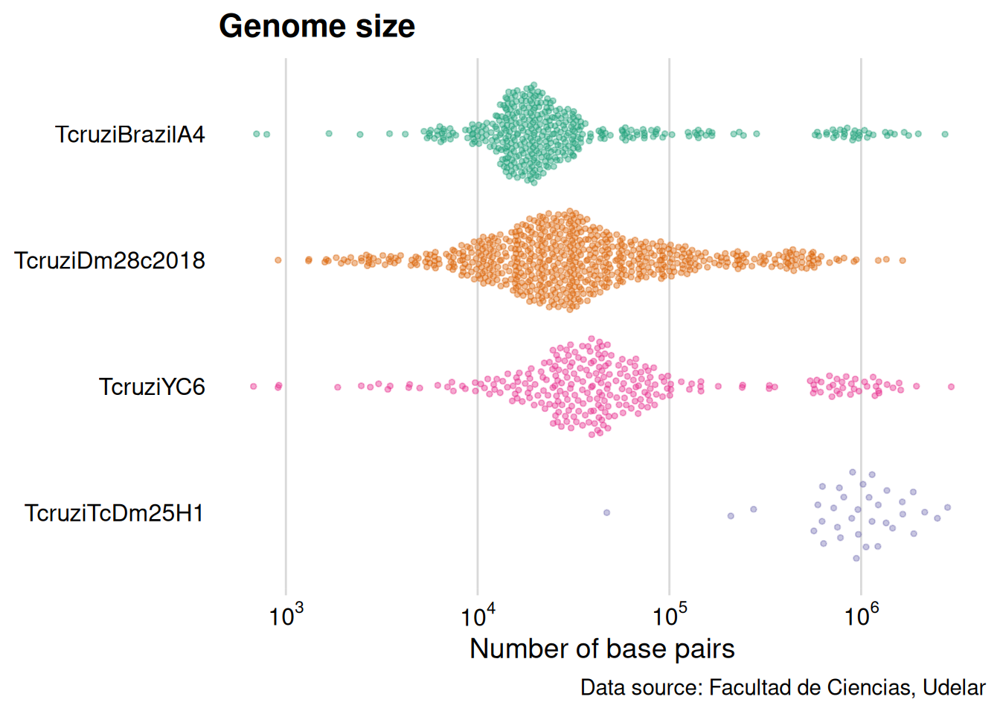
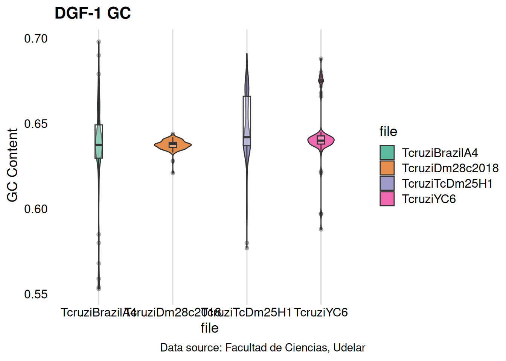
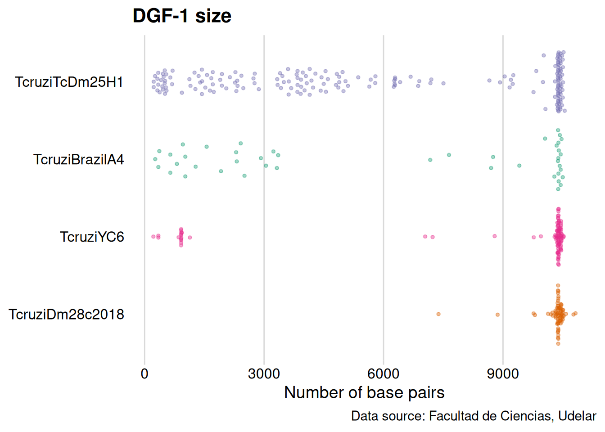
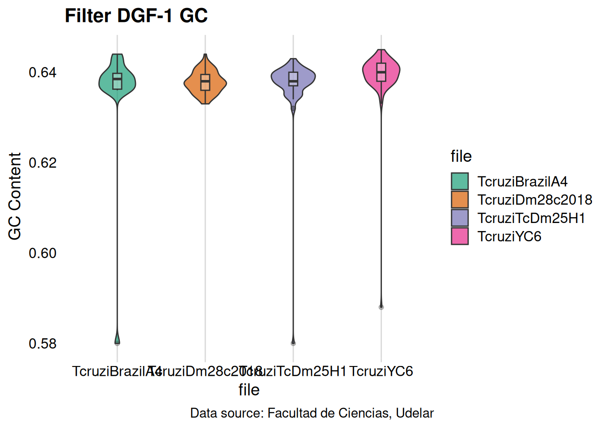
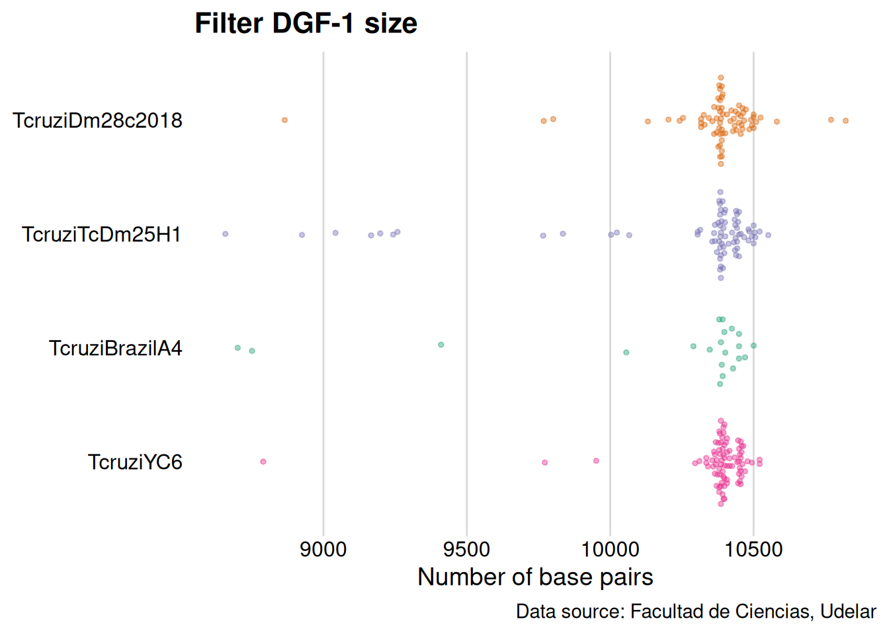

Análisis genómico comparativo de genes DGF-1 en Trypanosoma Cruzi
1 Descripcion
Los datos utilizados en este análisis fueron obtenidas a partir de diferentes genomas de Trypanosoma cruzi, disponibles en tritrydb y NCBI.
A partir de estos genomas, se extrajeron secuencias de los genes DGF-1, con el objetivo de realizar análisis comparativo. Inicialmente se estudió el contenido de GC, longitud de las secuencias, y otros aspectos relevantes para la caracterización de los genes de DGF-1.
1.1 Genomas
Este análisis utiliza los siguientes genomas TriTrypDB-68_TcruziDm28c2018_Genome.fasta, TriTrypDB-68_TcruziBrazilA4_Genome.fasta, TriTrypDB-68_TcruziYC6_Genome.fasta, TcDm25_TcruziTcDm25H1_Genome.fasta. A partir de los cuales se obtienen las secuencias para su estudio.
1.2 Librerias y datos a usar
Se cargan las bibliotecas necesarias para el análisis de datos genómicos, así como para la manipulación, transformación y visualización de dataframes, junto con la generación de gráficos en formato de arreglo. A continuación, se crea una lista de archivos que contiene los genomas a analizar, y se inicializa una tabla destinada a almacenar los resultados del análisis de los archivos FASTA.
2 Procesamiento de los genomas
Para procesar las secuencias FASTA, se crea una función que genera un dataframe vacío donde se almacenarán los elementos obtenidos a partir de una secuencia dada. Luego, se elimina la ruta del archivo para extraer el nombre del mismo. A continuación, se obtiene el identificador de cada una de las secuencias dentro del archivo FASTA, se calcula la longitud de la secuencia y el contenido de GC utilizando funciones de la biblioteca SEQINR.
2.1 Características de los genomas
Se utiliza ALGO la función mencionada para extraer diversas características de los genomas. Con estos datos, generamos la primera Tabla resumen, que agrupa los contigs de cada genoma TriTrypDB-68_TcruziDm28c2018_Genome.fasta, TriTrypDB-68_TcruziBrazilA4_Genome.fasta, TriTrypDB-68_TcruziYC6_Genome.fasta, TcDm25_TcruziTcDm25H1_Genome.fasta, mostrando el número total de secuencias encontradas, así como la longitud mínima, media y máxima, así como el contenido de GC mínimo, medio y máximo.
Code
# Llamamos a la funcion para obtener GC y largo de cada contig, de cada genoma
# genomes <- calculate_fasta_feature(data_transformed$fasta_file, "genome")
# genomes <- transform_columns(genomes, "ID")
# path_genome_safe_tsv <- file.path("output_directory/", paste0("genome_gc_length.tsv"))
#path_genome_safe <- file.path("output_directory/", paste0("genome_gc_length.csv"))
#write.csv(genomes, file = path_genome_safe, row.names = FALSE, col.names = TRUE, quote = FALSE)
# write.table(genomes, file = path_genome_safe_tsv, row.names = FALSE, col.names = TRUE, sep = "\t", quote = FALSE)
# Load the table generated by the second script
# genomes <- read.table("output_directory/genome_gc_length.tsv", sep = "\t", header = TRUE)
genomes <- read.csv("output_directory/genome_gc_length.csv", sep = ",", header = TRUE)
# Crear una tabla con el conteo de secuencias por archivo
genomes_summary <- genomes %>%
group_by(file) %>%
summarise(Total_Sequences = n(),
min_length = min(Length),
mean_length = round(mean(Length), 0),
max_length = max(Length),
min_gc = min(GC_Content),
mean_gc = round(mean(GC_Content), 3),
max_gc = max(GC_Content))2.2 Tabla resumen de los genomas
2.3 Visualización de la Longitud y Contenido de GC de los Genomas
En esta sección, se generarán gráficos que representan el contenido de GC y la longitud de cada genoma. Se implementan funciones específicas para cada gráfico, lo que permite reutilizar el código de manera eficiente en otras partes del análisis. Para crear estas funciones se implementara las bibliotecas ggridges, ggbeeswarm y cowplot.
La función plot_violin_gc genera un gráfico de violín que muestra la distribución del contenido de GC en distintos genomas TriTrypDB-68_TcruziDm28c2018_Genome.fasta, TriTrypDB-68_TcruziBrazilA4_Genome.fasta, TriTrypDB-68_TcruziYC6_Genome.fasta, TcDm25_TcruziTcDm25H1_Genome.fasta.
Code
library(ggridges)
library(ggbeeswarm)
library(cowplot)
genomes$Length <- as.numeric((format(genomes$Length, scientific = TRUE))) # Changed format
# Inspired by http://tom-e-white.com/datavision/05-genome-size.html domain of https://github.com/tomwhite
# GC plotting function
plot_violin_gc <- function(data, plot_title, y_label) {
ggplot(data, aes(x = file, y = GC_Content, fill = file)) +
geom_violin(alpha = 0.7, width = 0.5) +
geom_boxplot(width = 0.1, fill = "white", alpha = 0.3) +
scale_fill_brewer(palette = "Dark2") + # Apply RColorBrewer's Dark2 Palette
ylab(y_label) + # Customize the ylab
labs(
title = plot_title, # Customize the title
caption = "Data source: Facultad de Ciencias, Udelar"
) +
theme_minimal_vgrid() +
theme(axis.line.y = element_blank(), axis.ticks.y = element_blank())
}
# Function plot_violin_gc call
plot_violin_gc(
data = genomes,
plot_title = "Genome GC",
y_label = "GC Content"
)
La función de R plot_violin_length crea un gráfico de violín que ilustra la distribución de las longitudes genómicas de los diferentes genomas TriTrypDB-68_TcruziDm28c2018_Genome.fasta, TriTrypDB-68_TcruziBrazilA4_Genome.fasta, TriTrypDB-68_TcruziYC6_Genome.fasta, TcDm25_TcruziTcDm25H1_Genome.fasta.
Code
# Function to plot the length of genomes
plot_violin_length <- function(data, type, plot_title, x_label) {
set.seed(12345)
p <- ggplot(data, aes(Length, reorder(file, -Length, FUN = median), color = file)) + # reorder(file, -Length, FUN=median)
geom_quasirandom(groupOnX = FALSE, show.legend = FALSE, size = 1, dodge.width = 0.9, alpha = 0.4) +
labs(
title = plot_title, # Title customization
x = x_label, # Custom x-axis label
caption = "Data source: Facultad de Ciencias, Udelar"
) +
theme_minimal_vgrid() +
theme(axis.title.y = element_blank(), axis.line.y = element_blank(), axis.ticks.y = element_blank()) +
scale_color_brewer(palette = "Dark2")
# Conditional to choose the type of scale on the x axis
if (type == "genome") {
p <- p + scale_x_log10(
breaks = c(10^2, 10^3, 10^4, 10^5, 10^6, 10^7, 10^8, 10^9, 10^10),
labels = scales::trans_format("log10", scales::math_format(10^.x))
)
}
return(p)
}
# Function plot_violin_length call
plot_violin_length(
data = genomes,
"genome",
plot_title = "Genome size",
x_label = "Number of base pairs"
)
3 Procesamiento del total de las secuencias codificantes
Se llama a la funcion calculate_fasta_feature para calcular en el total de secuencia codificante el contenido de GC y la longitud (pb). Finalmente, creamos una tabla resumen, que agrupa el total secuencias codificantes por cada genoma TriTrypDB-68_TcruziDm28c2018_Genome.fasta, TriTrypDB-68_TcruziBrazilA4_Genome.fasta, TriTrypDB-68_TcruziYC6_Genome.fasta, TcDm25_TcruziTcDm25H1_Genome.fasta, mostrando así como la longitud mínima, media y máxima, así como el contenido de GC mínimo, medio y máximo.
Code
# Llamamos a la funcion para obtener GC y largo de cada contig, de cada genoma
# all_code_prot <- calculate_fasta_feature(rest_code_prot, "gene")
# all_code_prot <- transform_columns(all_code_prot, "ID")
# path_all_prot_safe_tsv <- file.path("output_directory/", paste0("all_code_protein_gc_length.tsv"))
#path_all_prot_safe <- file.path("output_directory/", paste0("all_code_protein_gc_length.csv"))
#write.csv(all_code_prot, file = path_all_prot_safe, row.names = FALSE, col.names = TRUE, quote = FALSE)
# write.table(all_code_prot, file = path_all_prot_safe_tsv, row.names = FALSE, col.names = TRUE, sep = "\t", quote = FALSE)
# Load the table generated by the second script
# all_code_prot_data <- read.table("output_directory/all_code_protein_gc_length.tsv", sep = "\t", header = TRUE)
all_code_prot_data <- read.csv("output_directory/all_code_protein_gc_length.csv", sep = ",", header = TRUE)
# Crear una tabla con el conteo de secuencias por archivo
all_code_prot_summary <- all_code_prot_data %>%
group_by(file) %>%
summarise(Total_Sequences = n(),
min_length = min(Length),
mean_length = round(mean(Length), 0),
max_length = max(Length),
min_gc = min(GC_Content),
mean_gc = round(mean(GC_Content), 3),
max_gc = max(GC_Content))3.1 Tabla resumen de secuencias codificantes por genoma
Llamamos a la funcion plot_violin_gc, dando lugar a un gráfico violín que muestra la distribución del contenido de GC en distintos genomas de las secuencias.
Code
# Function plot_violin_gc call
plot_violin_gc(
data = all_code_prot_data,
plot_title = "Coding sequence GC",
y_label = "GC Content"
)
Además, reutilizamos la función previamente empleada para graficar la distribución del genoma, pero esta vez generamos un gráfico que muestra la distribución de las longitudes de todas las secuencias codificantes, correspondientes a cada genoma.
Code
# Function plot_violin_length call
plot_violin_length(
data = all_code_prot_data,
"genome",
plot_title = "coding sequence size",
x_label = "Number of base pairs"
)
4 Procesamiento de las secuencias DGF-1
La función calculate_fasta_feature se usa para calcular para cada secuencia out_:DGF-1_protein_coding_gene:_TriTrypDB-68_TcruziDm28c2018.fasta, out_:DGF-1_protein_coding_gene:_TriTrypDB-68_TcruziBrazilA4.fasta, out_:DGF-1_protein_coding_gene:_TriTrypDB-68_TcruziYC6.fasta, out_:DGF-1_polypeptide:_TcDm25_TcruziTcDm25H1.fasta el contenido de GC y la longitud (pb) de DGF-1. Se crea una tabla resumen, que agrupa las secuencias por cada genoma TriTrypDB-68_TcruziDm28c2018_Genome.fasta, TriTrypDB-68_TcruziBrazilA4_Genome.fasta, TriTrypDB-68_TcruziYC6_Genome.fasta, TcDm25_TcruziTcDm25H1_Genome.fasta, mostrando el DGF-1, así como la longitud mínima, media y máxima, así como el contenido de GC mínimo, medio y máximo.
Code
target_protein <- calculate_fasta_feature(fasta_files, "gene")
target_protein <- transform_columns(target_protein, "ID")
# Crear una tabla con el conteo de secuencias por archivo
file_sequence_counts <- target_protein %>%
group_by(file) %>%
summarise(Total_Sequences = n(),
min_length = min(Length),
mean_length = round(mean(Length), 0),
max_length = max(Length),
min_gc = min(GC_Content),
mean_gc = round(mean(GC_Content), 3),
max_gc = max(GC_Content))
# Mostrar la tabla de conteo de secuencias
reactable(file_sequence_counts, highlight = TRUE)
4.1 Visualización de la Longitud y Contenido de GC de DGF-1
Se generan gráficos que representan el contenido de GC y la longitud de cada secuencia out_:DGF-1_protein_coding_gene:_TriTrypDB-68_TcruziDm28c2018.fasta, out_:DGF-1_protein_coding_gene:_TriTrypDB-68_TcruziBrazilA4.fasta, out_:DGF-1_protein_coding_gene:_TriTrypDB-68_TcruziYC6.fasta, out_:DGF-1_polypeptide:_TcDm25_TcruziTcDm25H1.fasta de DGF-1. En esta seccion reutilizaremos parte del codigo escrito llamando a las funciones que crean los plot de GC y de longitud de las secuencias.
Se usa la funcion plot_violin_gc, dando lugar a un gráfico violín que muestra la distribución del contenido de GC en distintos genomas de las secuencias DGF-1.
Code
var_title_gc <- paste0(key_name," GC")
# Function plot_violin_gc call
plot_violin_gc(
data = target_protein,
plot_title = var_title_gc,
y_label = "GC Content"
)
Se usa la función previamente empleada para graficar la distribución del genoma, pero esta vez generamos un gráfico que muestra la distribución de las longitudes de las distintas secuencias de DGF-1, correspondientes a cada genoma.
Code

5 Filtrado de las secuencias de DGF-1 por el largo
Se filtran las secuencias de DGF-1 de acuerdo a un largo mínimo (8000 pb). Las secuencias menores a este minimo se descartaran para este analisis inicial, y serán estudiadas para determinar si son pseudogenes.
5.1 Resumen de Información de DGF-1 completas en cada genoma (filtradas por largo)
Se genera una tabla con las estadístias descriptivas de las DGF-1 completas
5.2 Visualización de la Longitud y Contenido de GC de DGF-1 completas
Se representan el contenido de GC y la longitud de cada secuencia de DGF-1 completas (filtrada por un largo minimo).
Se usa la funcion plot_violin_gc, para representar la distribución del contenido de GC en distintos genomas de las secuencias DGF-1 filtradas por un largo minimo.

Se usa la función plot_violin_length para representar distribución de las secuencias DGF-1 filtradas.

6 Resumen de Información de secuencias anotadas como DGF-1 menores al largo minimo establecido
Se crea una nueva tabla resumen a partir de las secuencias que se descartaran por no cumplir con el minimo de largo establecido.